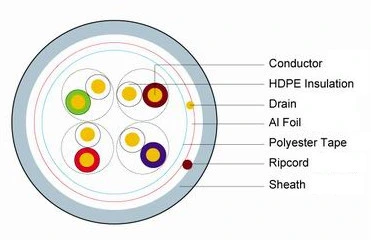

¿Qué son y para qué sirven las normas internacionales? (Ponga un ejemplo de una normativa aplicada a redes informáticas)
Las normas internacionales son estándares acordados globalmente que definen especificaciones, requisitos y directrices para asegurar la calidad, seguridad, eficiencia e interoperabilidad de productos, servicios y sistemas a nivel internacional. Estas normas son desarrolladas por organizaciones internacionales como la Organización Internacional de Normalización (ISO), la Comisión Electrotécnica Internacional (IEC), y otros cuerpos normativos. Su objetivo principal es garantizar que los productos y servicios puedan ser utilizados de manera segura y eficaz en diferentes países, facilitando el comercio internacional, mejorando la calidad de vida, y promoviendo la innovación tecnológica.
Un ejemplo de una normativa aplicada a redes informáticas es la norma ISO/IEC 11801, que define los estándares para el cableado estructurado de edificios comerciales y centros de datos. Esta normativa establece los requisitos para el diseño y la instalación de sistemas de cableado, incluyendo tipos de cables, conectores, distancias máximas, y métodos de pruebas para garantizar un rendimiento óptimo y la compatibilidad con diferentes dispositivos y aplicaciones de red. La ISO/IEC 11801 asegura que las redes informáticas sean fiables, seguras y puedan manejar la creciente demanda de datos y conectividad en entornos modernos.



.jpeg)
.png)
.jpg)
.webp)


.jpg)
.webp)
.jpg)